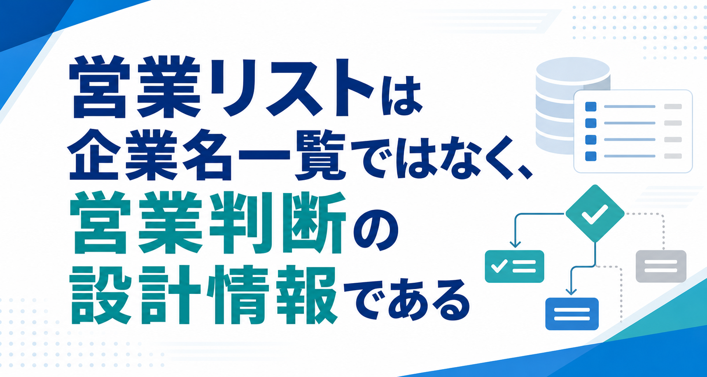

営業リストは企業名一覧ではなく、営業判断の設計情報である

みなさんこんにちは、Valorize AI代表の鈴木創也です。
営業リストを作ったのに、営業活動に活かしきれていない。
この悩みは、単にリストの件数が足りないから起きているわけではありません。企業名や電話番号を集めても、誰に、なぜ、どの順番で、どの文脈で接触するのかが決まっていなければ、営業担当者は結局、一件ずつ手探りで判断することになります。
営業リストは、企業名を並べた一覧ではありません。本来は、次の営業判断を支えるための設計情報です。
この記事では、営業リストとは何か、作成前に何を決めるべきか、どの項目を持つべきか、情報収集と管理で何に注意すべきかを整理します。最後には、営業リストを「作って終わり」にせず、営業判断に使える状態へ近づける考え方までお伝えします。
営業リストとは
営業リストとは、新規開拓や既存顧客への追加提案などで、営業先候補を管理するための一覧です。
一般的には、企業名、所在地、電話番号、Webサイト、担当部署、担当者名、メールアドレスなどをまとめたものを指します。テレアポで使う場合もあれば、問い合わせフォーム経由のアプローチ、インサイドセールス、展示会後のフォロー、休眠顧客の掘り起こしなどで使う場合もあります。
近い言葉として、見込み客リスト、アタックリスト、顧客リストという表現もあります。厳密な使い分けは会社によって異なりますが、営業活動で「次に接触すべき相手」を整理するための情報群だと考えると分かりやすいです。
ただし、営業リストを企業名と連絡先だけの表として扱うと、すぐに限界が来ます。
たとえば、同じ業界の企業が100社並んでいても、どの企業から連絡すべきか、どの課題仮説で話すべきか、過去に接触したことがあるのか、今メールを送ってよい状態なのかが分からなければ、営業判断には使いにくいままです。
営業リストは、作ること自体が目的ではありません。次の営業アクションを判断できる状態にして初めて意味があります。
営業リストが必要な理由と、作っても成果につながらない原因
営業リストが必要とされる理由は、大きく三つあります。
- 営業先を探す時間を減らし、接触活動に時間を使いやすくするため
- 営業担当者ごとの情報を会社として共有しやすくするため
- 接触履歴や反応を蓄積し、次の営業活動に活かすため
営業先候補が毎回ばらばらに探されていると、担当者によって狙う企業が変わり、営業活動の振り返りも難しくなります。営業リストがあれば、少なくとも「誰に対して営業するのか」という土台をそろえられます。
一方で、営業リストを作っても成果につながりにくいケースもあります。
よくあるのは、次のような状態です。
- ターゲット条件が曖昧なまま企業名だけを集めている
- 古い情報や重複した企業が残っている
- 担当者ごとに入力項目や表記が違う
- 受注確度や温度感の基準が人によって違う
- 接触履歴が残っておらず、同じ企業へ重複して連絡してしまう
- 営業リストの更新担当や更新タイミングが決まっていない
この状態では、件数が多くても営業担当者の判断負荷は下がりません。むしろ、どの情報を信じればよいか分からず、確認工数が増えることもあります。
営業リストの問題は、企業数の不足だけではありません。誰を優先し、どう接触し、どう更新するかが決まっていないことにあります。
営業リストを作る前に決めること
営業リスト作成では、情報収集を始める前に決めるべきことがあります。
先に設計しておきたいのは、営業戦略、ターゲット条件、必要件数、接触チャネル、必要項目です。
営業戦略
まず、何のために営業リストを作るのかを決めます。
新規商談を増やしたいのか、特定業界を開拓したいのか、既存顧客に追加提案したいのか、展示会後のフォローを効率化したいのか。目的によって、必要な企業情報も接触方法も変わります。
営業戦略が曖昧なままリストを作ると、後から「この企業は本当に対象なのか」という確認が増えます。
ターゲット条件
次に、どのような企業を対象にするのかを決めます。
業種、地域、従業員規模、売上規模、利用中のサービス、拠点数、採用状況、組織課題など、商材によって見るべき条件は変わります。
このとき大事なのは、対象条件だけでなく、除外条件も決めることです。対象外の企業までリストに入ると、営業担当者が一件ずつ確認しなければならなくなります。
必要件数
必要件数は、多ければよいとは限りません。
商談化までの歩留まり、営業担当者の稼働、接触チャネル、フォロー回数を考えずに大量のリストを作っても、運用しきれない可能性があります。
営業リストの件数は、営業活動で処理できる量と、検証したいターゲット仮説の範囲から決めるのが現実的です。
接触チャネル
電話、メール、問い合わせフォーム、SNS、紹介、展示会後フォローなど、接触チャネルによって必要な項目と注意点は変わります。
メール営業であれば、メールアドレスだけでなく、送信拒否への対応や表示義務の確認が必要になります。電話であれば代表番号、部署番号、受付突破のための仮説が必要になるかもしれません。
接触チャネルを決めずにリストを作ると、後から必要な項目が足りないことに気づきやすくなります。
必要項目
最後に、営業リストに入れる項目を決めます。
企業名、所在地、電話番号だけで十分なのか。担当部署、担当者名、業種、規模、課題仮説、接触履歴、受注確度、優先順位まで持つのか。ここを決めずに収集を始めると、入力項目が人によってばらつきます。
リスト作成前の設計が曖昧なまま情報収集を始めると、営業に使えない名簿が増えるだけになります。
営業リストに入れる項目
BtoB営業の営業リストは、項目を四つに分けると整理しやすくなります。
- 法人を識別する項目
- 接触するための項目
- 営業判断のための項目
- 運用管理のための項目
法人を識別する項目
法人を識別する項目は、企業を正しく特定するための情報です。
たとえば、法人番号、商号または名称、所在地、WebサイトURL、業種、拠点情報などです。
国税庁の法人番号公表サイトでは、法人番号、商号又は名称、本店又は主たる事務所の所在地などを確認できます。法人番号は、名寄せや重複確認、所在地変更の確認などで土台になり得る情報です。
国税庁 法人番号公表サイト「法人番号とは」
https://www.houjin-bangou.nta.go.jp/setsumei/
ただし、法人番号公表サイトで分かるのは法人の基本情報です。担当者名、部署、メールアドレス、課題、導入可能性、受注確度まで確認できるわけではありません。
接触するための項目
接触するための項目は、実際にアプローチするための情報です。
代表電話、部署電話、問い合わせフォームURL、メールアドレス、担当部署、担当者名、役職、SNSアカウントなどが候補になります。
ここでは、単に連絡先を集めるだけでなく、どのチャネルで接触するのかを意識する必要があります。問い合わせフォーム経由のアプローチであればフォームURLが重要ですし、電話営業であれば代表番号だけでなく、受付でどの部署につないでもらうかの仮説も必要です。
営業判断のための項目
営業判断のための項目は、どの企業を優先するか、どの文脈で接触するかを決めるための情報です。
たとえば、ターゲット条件への適合度、想定課題、利用中のサービス、採用状況、資金調達、事業拡大の兆候、過去反応、受注確度、優先順位などです。
この項目がないと、営業担当者は企業名を見てから毎回調査し、判断することになります。営業リストを営業判断に使うためには、この層の情報が重要です。
運用管理のための項目
運用管理のための項目は、リストを継続的に使うための情報です。
担当者、作成日、更新日、情報源、接触履歴、ステータス、次回アクション、重複確認状況、送信拒否や配信停止の状況などが該当します。
特に、営業リストに個人名、担当者メール、名刺情報、Web行動データなどを含める場合は、取得元、利用目的、更新、安全管理の確認が必要になります。
公式情報で整えられる法人情報と、自社で設計すべき営業判断情報を分けて持つことが、使える営業リストの前提になります。
営業リストの情報収集方法
営業リストの情報収集方法は、無料収集、有料購入、ツール活用、自社データ活用に分けられます。
どれが絶対に優れているという話ではありません。費用、工数、鮮度、利用範囲、ターゲット適合性、法務・プライバシー上の確認事項がそれぞれ違います。
無料収集
無料収集では、企業サイト、法人番号公表サイト、業界団体サイト、展示会出展社一覧、セミナー参加情報、求人サイト、SNS、ニュース記事などを確認してリスト化します。
費用を抑えやすく、自社のターゲット条件に合わせて調べやすい点が利点です。一方で、収集工数がかかり、情報の抜け漏れや表記ゆれ、更新漏れが起きやすくなります。
無料で集めた情報でも、取得元、利用目的、更新方法は明確にしておく必要があります。
有料購入
有料購入では、企業データベースや営業リスト販売サービスから、条件に合う企業情報を取得します。
短時間で一定件数を集めやすい一方で、件数や価格だけで判断するのは危険です。取得元、更新頻度、利用可能範囲、第三者提供に関する扱い、自社ターゲットとの適合性、重複の有無を確認する必要があります。
有料だから必ず高品質とも、購入すればそのまま営業に使えるとも限りません。
ツール活用
営業リスト作成ツールやCRM/SFAは、企業情報の検索、抽出、更新、管理、重複確認を助ける手段になります。
ただし、ツールはターゲット定義や営業判断を自動で完成させるものではありません。どの条件で抽出するのか、どの企業を優先するのか、どの情報を営業担当者に渡すのかは、自社側で設計する必要があります。
ツールは、情報収集と管理の負荷を下げる手段として考えるのが現実的です。
自社データ活用
自社データには、名刺、問い合わせ履歴、資料請求、過去商談、展示会での接点、既存顧客情報、休眠顧客情報などがあります。
自社データの強みは、過去の接触履歴や反応を含められることです。一方で、部署ごとに管理形式が違う、古い情報が残っている、利用目的が整理されていない、名寄せされていないといった課題が出やすくなります。
個人情報を含むデータを扱う場合は、個人情報保護委員会のガイドラインでも示されているように、利用目的、第三者提供、正確性・最新性、安全管理などの観点を確認する必要があります。
また、広告宣伝メールを送る場合は、特定電子メール法上の同意、表示義務、送信拒否対応、送信者情報の正確性も確認が必要です。Web上で公表されているメールアドレスであっても、送信拒否の表示がある場合などには注意が必要です。
迷惑メール相談センター「特定電子メール法」
https://www.dekyo.or.jp/soudan/contents/taisaku/1-2.html
情報源を選ぶときは、件数や価格だけでなく、取得元、利用目的、更新頻度、利用可能範囲、送信拒否対応まで確認する必要があります。
作成した営業リストの管理・運用方法
営業リストは、作成した時点ではまだ完成していません。
営業活動で使い続けるには、更新、重複排除、表記ゆれ整理、部署間共有、接触履歴管理、受注確度の基準化が必要です。
更新する
企業情報は変わります。社名、所在地、担当者、部署、問い合わせフォーム、採用状況、事業内容は、時間が経つほど古くなる可能性があります。
すべてのデータを常に最新にするのは現実的ではありません。重要なのは、利用目的に応じて、どの情報を、どの頻度で、誰が更新するかを決めることです。
個人データを扱う場合も、利用目的の達成に必要な範囲で正確性・最新性を保つ観点が出てきます。営業リストの更新は、営業効率だけでなく、情報管理の面でも重要です。
重複と表記ゆれを減らす
同じ企業が複数行に分かれていると、重複接触や履歴分散が起きやすくなります。
株式会社の有無、旧社名、支店名、所在地の表記、法人番号の有無などで、同じ企業が別企業のように見えることがあります。法人番号、商号、所在地、WebサイトURLなどを確認キーとして使うと、重複確認の精度を上げやすくなります。
ただし、法人番号だけであらゆる名寄せが完了するわけではありません。グループ会社、事業所、支店、ブランド名など、営業上は別管理した方がよいケースもあります。
部署をまたいで共有する
営業リストは、営業部門だけで閉じるとは限りません。
マーケティングが獲得したリード、インサイドセールスの接触履歴、フィールドセールスの商談結果、カスタマーサクセスが持つ既存顧客情報などが分断されると、同じ企業に対する理解がばらばらになります。
共有するには、入力項目、ステータス、更新ルール、担当者、閲覧権限を決める必要があります。Excelやスプレッドシートで管理するのか、CRM/SFAや専用ツールで管理するのかは、件数、関係者数、更新頻度、セキュリティ要件によって選ぶべきです。
受注確度と優先順位を決める
営業リストを営業活動に使うには、どの企業から接触するかを決める必要があります。
受注確度や温度感の基準がないと、担当者ごとの感覚で優先順位が変わります。たとえば、ターゲット条件への適合度、直近の行動、過去接触、課題仮説、導入タイミング、接触可能性などを組み合わせて、A、B、Cのような簡単なランクを付ける方法があります。
ここで重要なのは、ランク付けそのものではなく、判断基準を共有することです。
営業リストは、一度作った時点では未完成です。更新と運用ルールによって、営業に使える状態を保つ必要があります。
営業リストを営業判断に使える状態にする
営業リストの最終目的は、企業情報を持つことではありません。
誰を優先し、どの文脈で、どの順番で接触するかを判断できる状態にすることです。
そのためには、営業リストを次のように見直す必要があります。
- ターゲット条件に合っているか
- 今接触する理由があるか
- 過去にどのような接触をしたか
- どのチャネルで接触するのが自然か
- どの情報を根拠に優先順位を付けるか
- 送ってよい文面か、ブランド上問題がないか
ここまで考えると、営業リスト作成は単なるデータ収集ではなく、営業前工程の設計になります。
人手だけで情報収集、整理、重複確認、優先順位付け、企業ごとの事前調査、文面作成を続けると、更新が遅れたり、接触すべき企業の判断が属人的になったりしやすくなります。営業リストを継続的に使うなら、収集と整理を仕組み化する視点が必要です。
営業リストを使える状態にするには、企業を集めるだけでなく、どの企業に、どの文脈で接触するかまで前工程でそろえる必要があります。
その選択肢の一つとして、Valorize AIでは Sales Trigger を提供しています。Sales Triggerは、500万件の企業データをもとに、ターゲット選定、リスト作成、顧客情報調査、提案文やアプローチ文面作成、商談獲得までの流れを支援するサービスです。文面の最終確定は人間ができるように設計されています。
https://salestrigger.valorize-ai.com/
一方で、営業リストをどう使うかの最終判断は人が担う必要があります。
ターゲット仮説、除外条件、接触可否、法務・ブランドリスク、優先順位の最終判断、営業文脈の妥当性は、人間が確認すべき領域です。AI利用では、リスク管理や透明性などの観点も確認が必要です。
営業リストを成果に近づけるには、収集や整備を仕組み化しながら、ターゲット仮説、接触可否、優先順位、営業文脈の最終判断を人が担う必要があります。
まとめ
営業リストは、企業名や連絡先を集めた一覧ではありません。
営業リストを営業活動に使える状態にするには、定義、準備、項目、収集、管理、運用改善を一つながりで設計する必要があります。
作成前には、営業戦略、ターゲット条件、必要件数、接触チャネル、必要項目を決めます。項目は、法人を識別する項目、接触するための項目、営業判断のための項目、運用管理のための項目に分けて整理します。
情報収集では、無料収集、有料購入、ツール活用、自社データ活用を、優劣ではなく用途と制約で選びます。取得元、利用目的、送信拒否、表示義務、更新、安全管理も確認します。
作成後は、更新、重複排除、表記ゆれ整理、部署間共有、接触履歴管理、受注確度と優先順位付けを続けます。
営業リストは企業名一覧ではなく、次の営業判断を支える設計情報として作り、更新し続ける必要があります。作って終わりではなく、営業戦略に合わせて見直し続ける営業基盤として扱うことが大切です。